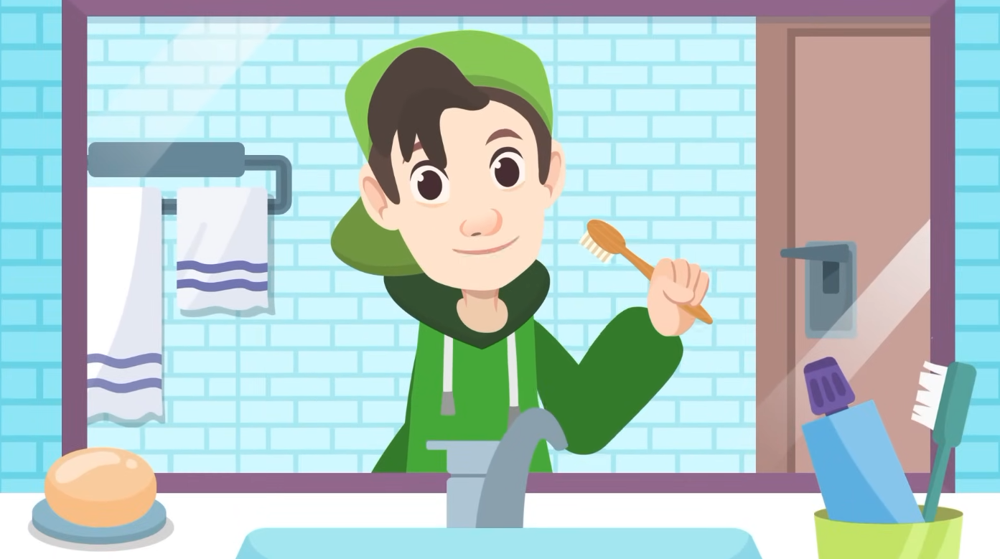
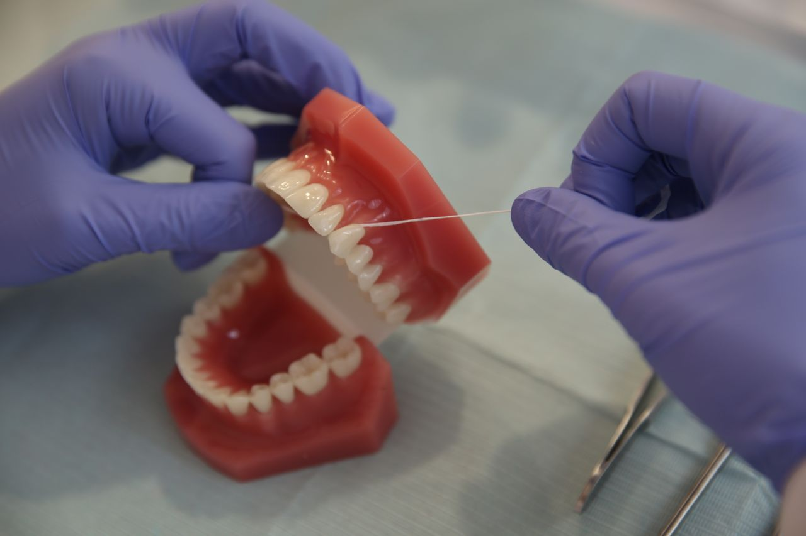
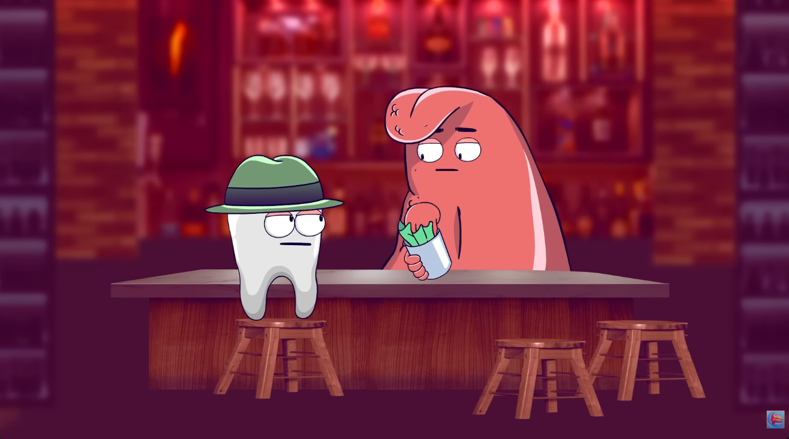
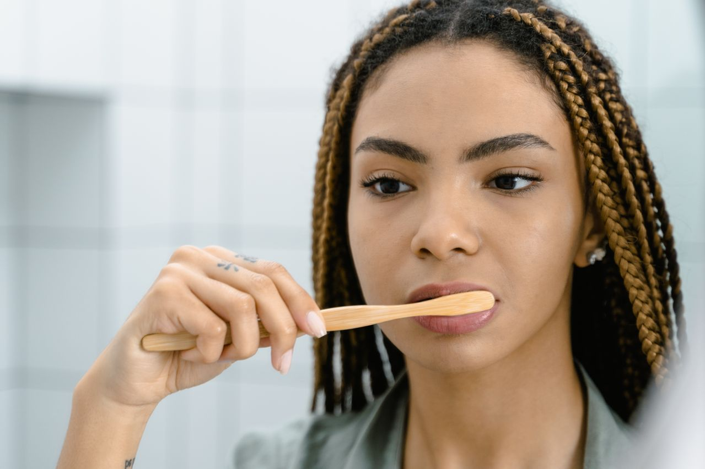
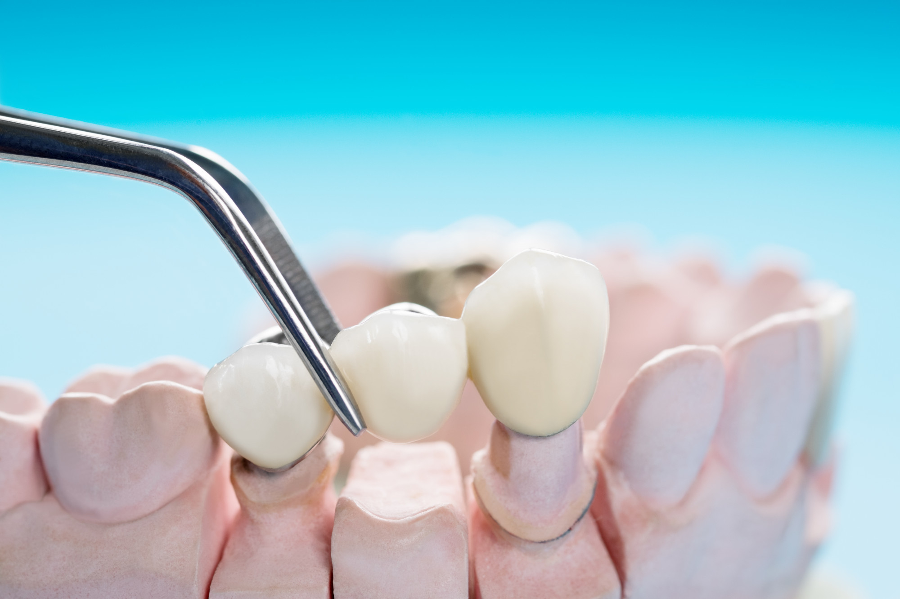
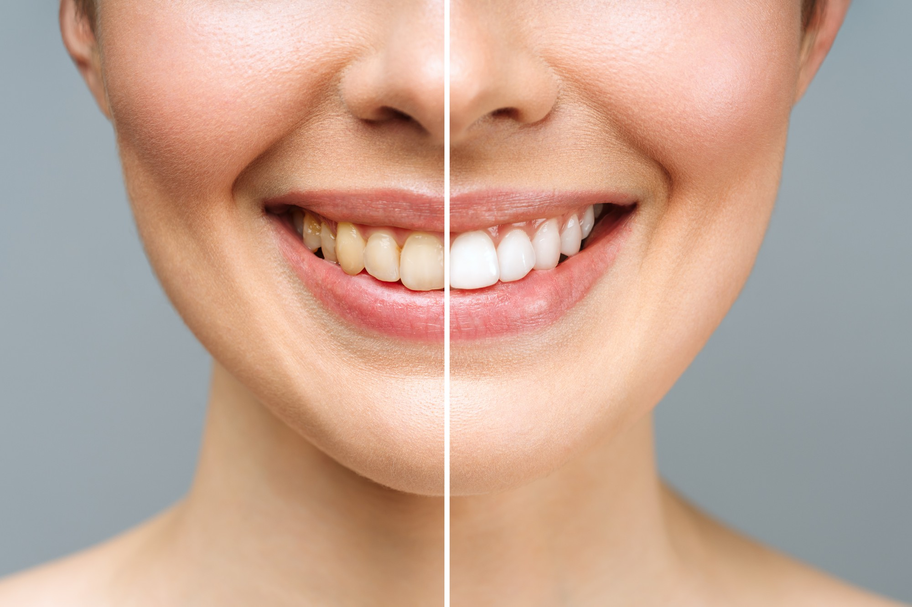
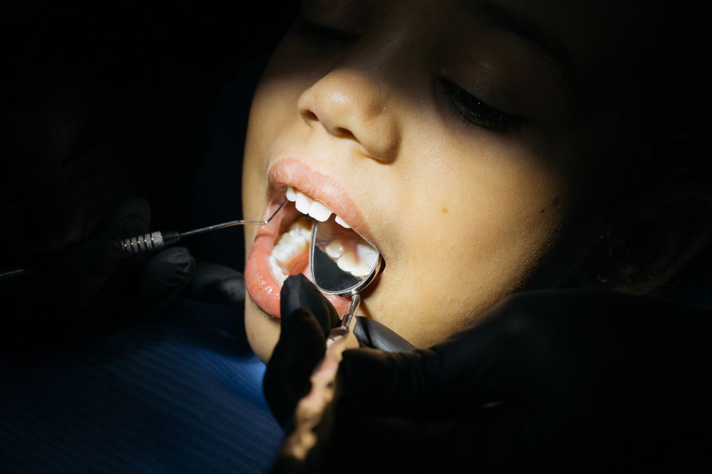
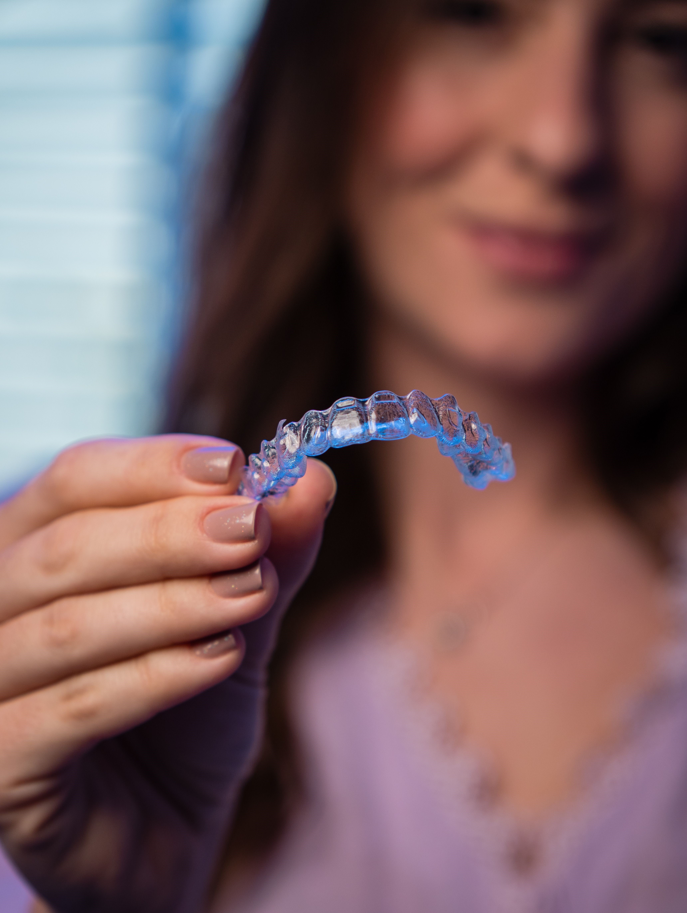

Movimientos suaves en ángulo de 45 grados para limpiar sin agredir las encías.

Llega a las áreas interdentales donde el cepillo tradicional no puede acceder.
Encuentra la fórmula ideal para prevenir placa o reducir la sensibilidad.

¿Alguna vez te has preguntado qué le pasa a un diente cuando tiene una caries?

Renueva tus cerdas cada 3 meses para asegurar una limpieza efectiva.

Nutrientes e hidratos esenciales para fortalecer la estructura dental.

Mitos comunes sobre sensibilidad y esmalte aclarados por profesionales.
Causas frecuentes del dolor al frío o calor y sus soluciones modernas.

Consejos para preparar a los más pequeños y generar confianza desde temprana edad.

Cómo identificar si apretas los dientes al dormir y el uso de placas de descanso.